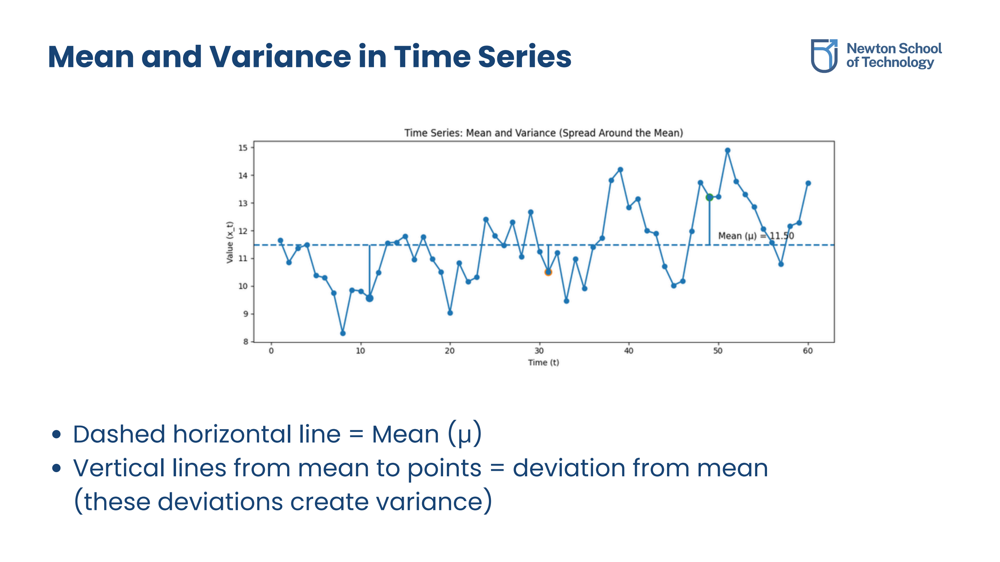
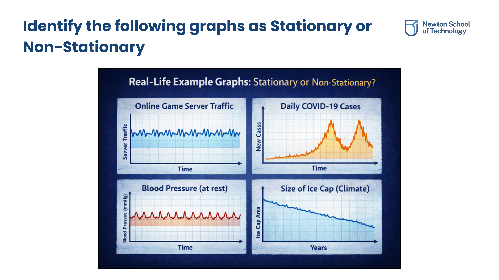
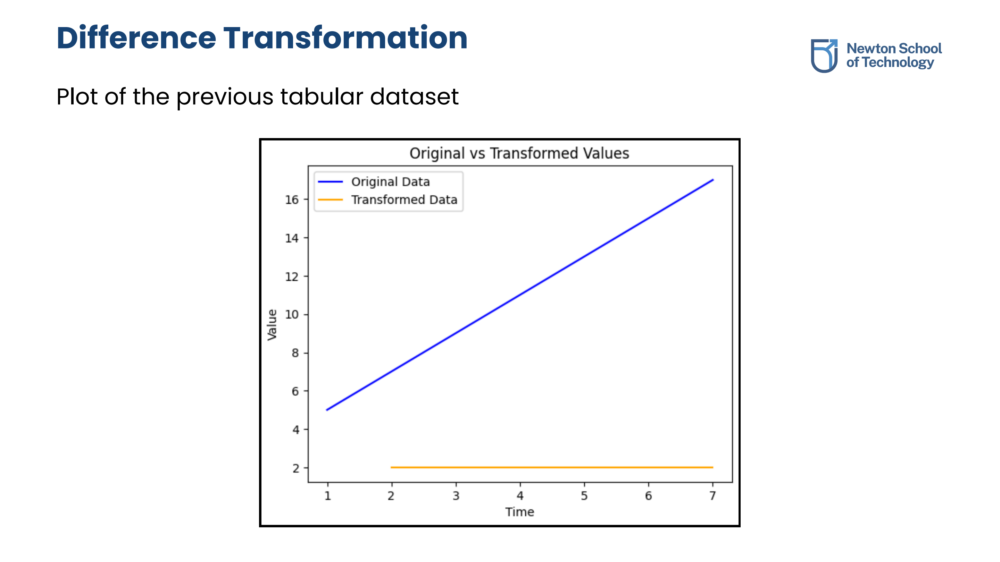
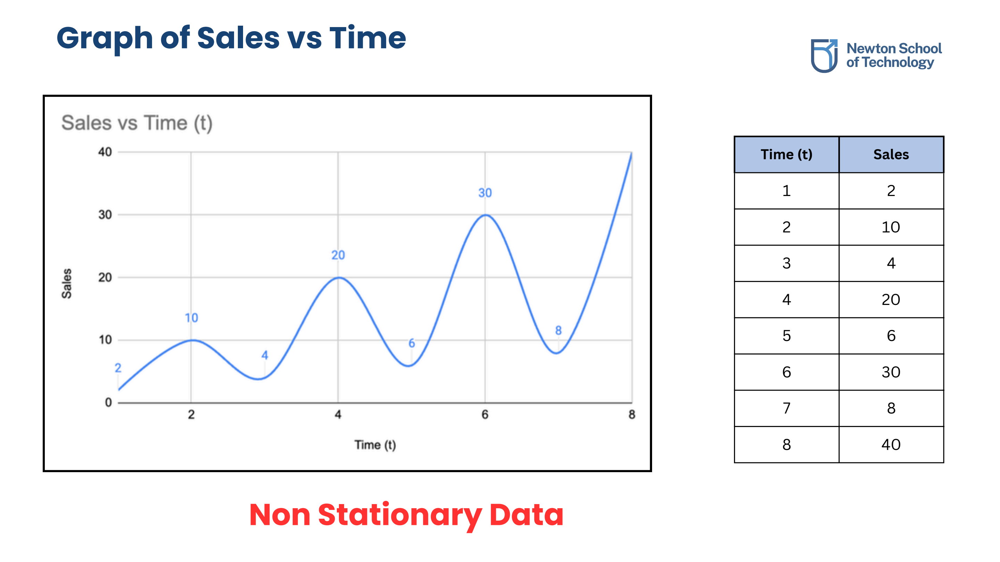
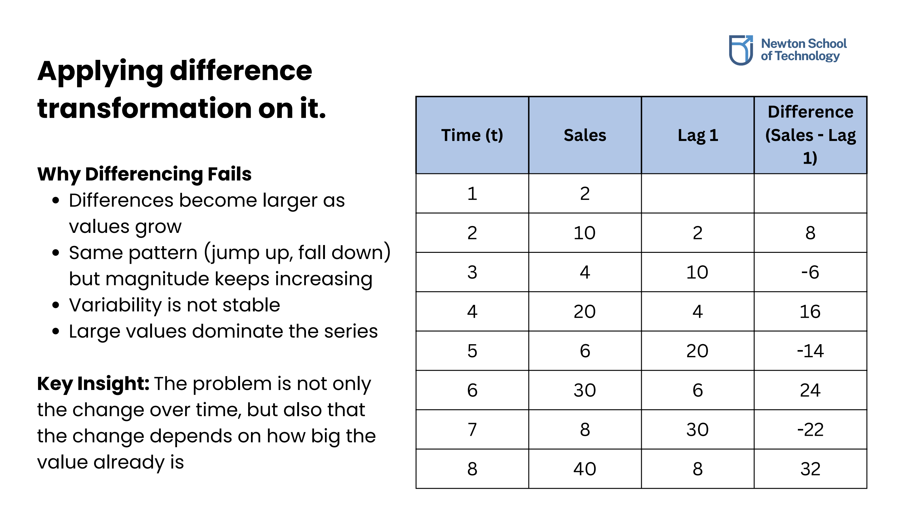
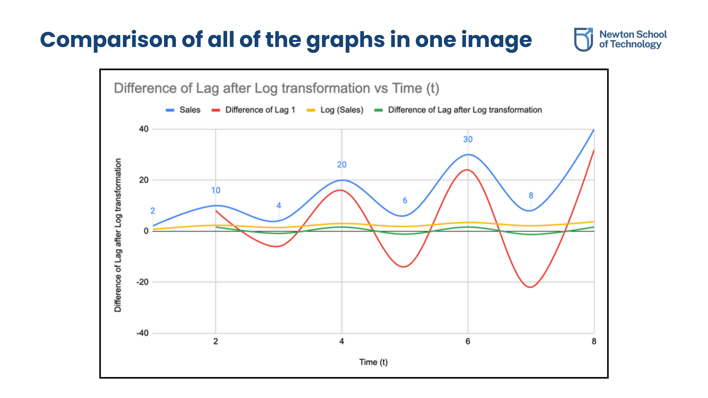
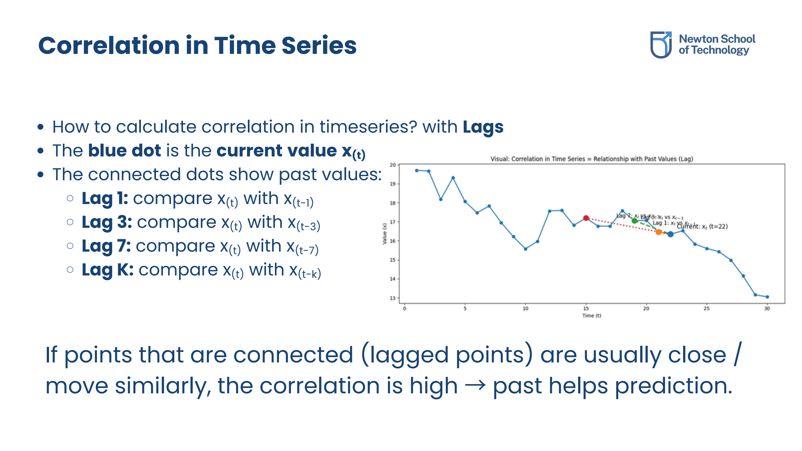
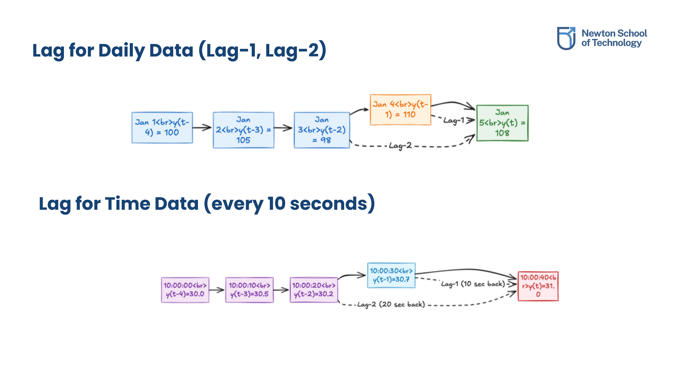
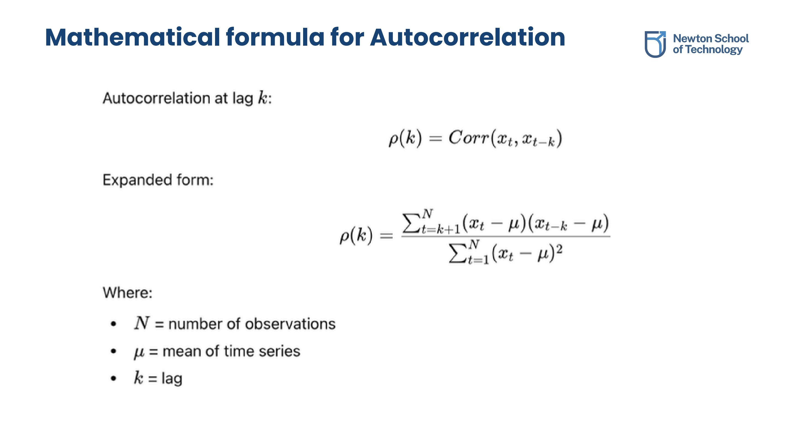

Stationarity vs. Non-Stationarity
1.1 Core Mathematical Properties
A time series is stationary if its statistical behavior does not change over time. In modeling, this means that the core joint probability distribution of the observations remains stable across temporal shifts.
- Constant Mean: E[Xt] = μ (stays constant over all time points).
- Constant Variance: Var(Xt) = σ2 (the spread/volatility stays stable).
- Autocovariance: Cov(Xt, Xt-k) = γk depends only on the lag (k) between observations, not on the actual time point (t).

Visualizing deviations from the constant mean μ. Deviations from the mean determine the variance of the series.
1.2 Mean & Variance Stability
To build an intuitive model of stationarity, we can compare indoor temperatures vs. outdoor temperatures:
- Mean Stability (e.g., Temperature inside a Fridge): A refrigerator is set to a constant cold temperature. Even if opening the door creates minor fluctuations, it constantly returns to the same baseline level. The mean remains constant over time.
- Non-Mean Stability (e.g., Outdoor City Temperature): Outdoor temperature shifts depending on daily cycles (day/night) and seasonal cycles (summer/winter). The mean level changes systematically over the course of the year.
- Variance Stability: A series has stable variance if its spread stays consistent. In contrast, financial asset values often show non-variance stability where volatility starts small but undergoes sudden jumps or expands over time.

Categorized time series behaviors showcasing stable flat bounds (Stationary) versus structured shifts and trends (Non-Stationary).
1.3 Why Stationarity Matters
Stationarity is a fundamental requirement for most statistical modeling and forecasting frameworks (such as ARIMA models):
- Consistent Predictability: If statistical parameters (mean, variance, correlation structure) remain constant, the past behavior of the series can be safely used to model future behavior.
- Mathematical Reliability: Standard statistical tests and estimation procedures assume that variance and mean do not drift. Drifting properties make standard estimators invalid.
- Model Simplicity: Estimating relationships on stable bounds is much more robust than modeling variables that grow indefinitely.
Transformations & Stationarization
2.1 Difference Transformation
When a time series exhibits an upward or downward trend, it is non-stationary because the mean level changes over time. We can apply the Difference Transformation to stabilize the mean by subtracting the value of the previous time step from the current value.
ΔYt = Yt - Yt-1
Where:
- Yt is the current value.
- Yt-1 is the value at Lag-1 (previous step).
- ΔYt is the change in value, which represents the stationarized series.

A linear upward trend in values transformed into a stationary series hovering around a constant value of 2.
2.2 Why Simple Differencing Fails
If a time series has non-constant variance (e.g., its fluctuations grow larger as the actual values grow), a simple difference transformation will fail to make the series stationary. The variance of the differenced values will continue to expand over time.

Original sales plot showing fluctuations that expand in magnitude as time progresses.

Differenced values plotted showing that differencing fails because the size of the jumps is proportional to the size of the underlying values.
2.3 Log Transformation
To handle expanding variance and exponential patterns, we compress the variance before modeling. The Log Transformation is highly effective at stabilizing variance across time.
- Compresses large swings and values, stabilizing variance.
- Transforms exponential growth trends into linear growth trends.
- Helps expose underlying seasonal/cyclical components that were previously overwhelmed by expanding values.
2.4 Log-Differencing
When dealing with volatile, growing series (such as sales or financial data), the standard stationarization pipeline is to apply the **Log Transformation first**, and then apply the **Difference Transformation second**.

Comparison layout showing original data, differenced data, log-transformed data, and final log-differenced stationary data.
Taking the difference of the log values yields a stable mean and variance: Δ(log(Yt)) = log(Yt) - log(Yt-1). This value physically represents the relative rate of change or percentage change of the series at step t.
Lag Dependence & Granularity
3.1 Understanding Lags
A lag represents the number of time steps back we look to compare or construct relationship parameters. If the current value is index t, then the value at Lag-k is the value recorded k steps prior.
Let the series value at current time be Yt. The Lag-k value is defined as:
Yt-k
For example, in daily data:
- Lag 1: Yesterday's value (Yt-1)
- Lag 2: Value from two days ago (Yt-2)
- Lag 7: Value from same day last week (Yt-7)

Visual mapping of current point x(t) linked to historical steps back (Lag-1, Lag-3, Lag-7, Lag-K).
3.2 Domain-Specific Lag Guidelines
The time duration represented by a single lag unit depends entirely on the observation frequency/granularity of the dataset:

Mapping lag representations according to second-wise, minute-wise, hourly, and daily metrics.
Always select lags that correspond to physical cycles in the domain:
- Daily series: Lag-1 (yesterday) and Lag-7 (weekly cycle).
- Hourly series: Lag-1 (last hour) and Lag-24 (same hour yesterday).
- 15-minute series: Lag-1 (last 15-min) and Lag-96 (same time yesterday).
Autocorrelation (ACF)
4.1 Definition & Patterns
Autocorrelation measures the strength of the linear relationship between a time series variable and its past values (lags). It is a critical mathematical diagnostic tool to test if today's values are dependent on historical values, rather than varying completely at random.
- Detecting Patterns: Identifies underlying periodic structures and repeating cycles (such as weekly seasonality).
- Model Selection: Determines the optimal number of autoregressive (AR) lags to include in time series predictive models.
- Randomness Test: Confirms if a residual series is indeed white noise (no remaining autocorrelation) or still contains structural patterns.
4.2 Mathematical Formulation
Autocorrelation at lag k (denoted ρk) is defined as the covariance between Yt and Yt-k divided by the variance of the series.

The mathematical formula for autocorrelation coefficients ρk at lag k.
Original PDF Notes
Below is the original PDF document for your reference: